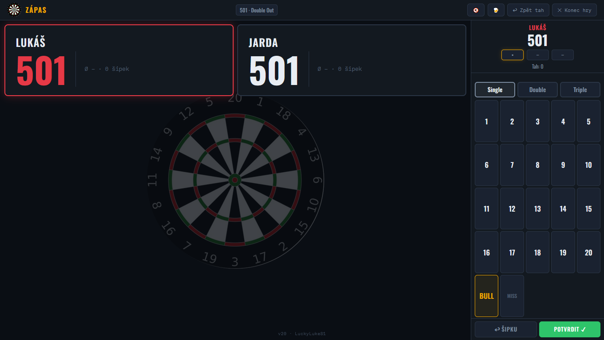
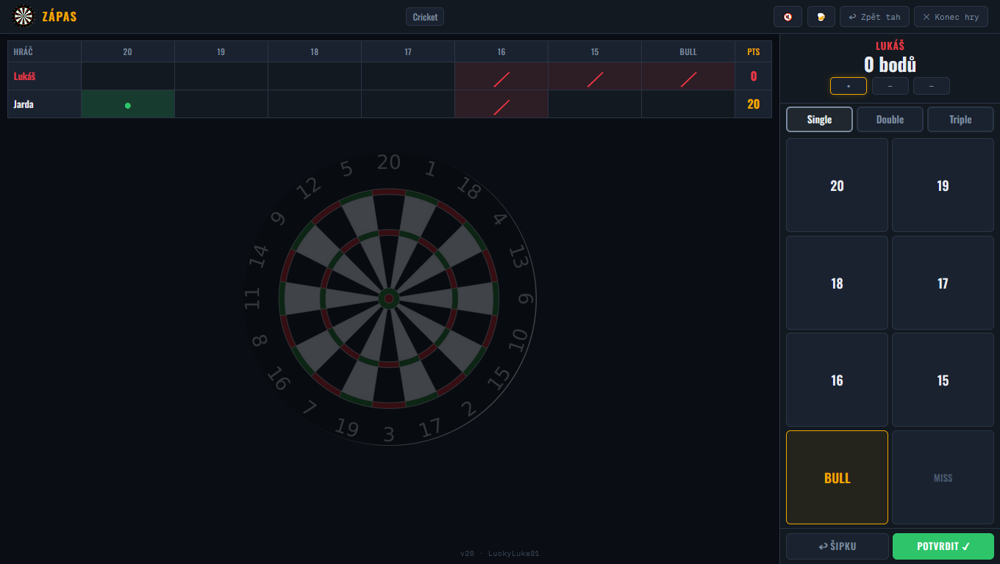
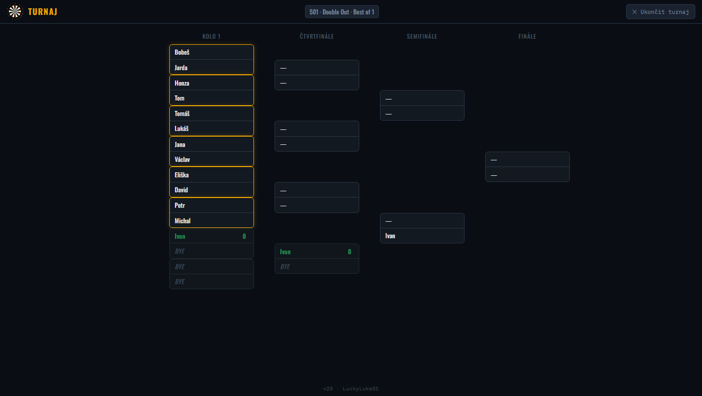

🎯
Šipková Liga
Darts Scoreboard & Liga Manager
Počítadlo skóre a správce šipkové ligy pro PC, tablet i mobil. Bez reklam, bez internetu, bez registrací. Jeden soubor, otevřít a hrát.
✓ 100% offline
✓ bez instalace
✓ zdarma
✓ PC & mobil
301 / 501 / Cricket
Turnajový pavouk
Funkce
Herní módy
301, 501 s pravidly dobíhání a bustu. Cricket. Plně konfigurovatelné.
Turnajový pavouk
Automaticky generovaný pavouk pro libovolný počet hráčů. Sledování postupu živě.
Boti
Vestavění boti v různých obtížnostech – trénuj i když nejsou protihráči.
Statistiky
Detailní statistiky hráčů, historie zápasů, průměry, přesnost.
Hlasové hlášky
České hlasové komentáře. Ano, i ta s pivem. 🍺
Export / Import
Záloha dat v JSON. Přenáš statistiky mezi zařízeními bez cloudu.
Screenshoty

Hlavní obrazovka

Hra 501

Cricket

Turnajový pavouk
Jak začít
1
Klikni Spustit
Nebo si stáhni HTML soubor z GitHubu.
2
Přidej hráče
Zadej jména nebo použij uložený roster.
3
Zvol mód
301, 501, Cricket nebo turnaj.
4
Hraj
Nic víc není potřeba.